rip ตัวอย่าง :
RouterA#config t
RouterA(config)#no router rip
เราเตอร์อื่นๆก้อทำเช่นเดียวกัน
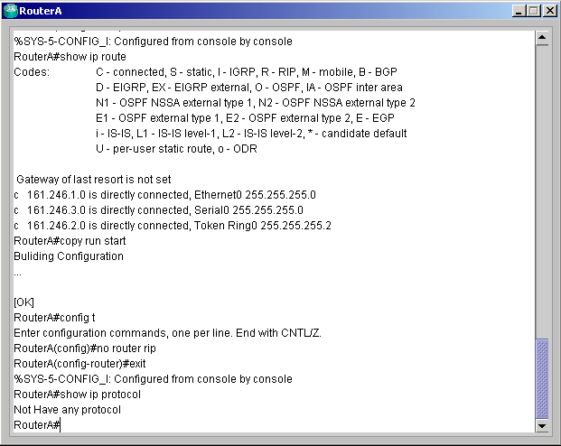

161.246.1.1 และเลขสีน้ำเงินหมายถึงค่า weight ของเราเตอร์แต่ละคู่ ที่ทำการกำหนดขึ้นมา
Router1#config t
Router1(config)#hostname R1
R1(config)#int e0
R1(config-if)#ip address 161.246.1.1 255.255.255.0
R1(config-if)#no shut
R1(config-if)#int s0
R1(config-if)#ip address 161.246.2.1 255.255.255.0
R1(config-if)#no shut
R1(config-if)#int s1
R1(config-if)#ip address 161.246.3.1 255.255.255.0
R1(config-if)#no shut
Router2#config t
Router2(config)#hostname R2
R2(config-if)#int s1
R2(config-if)#ip address 161.246.3.2 255.255.255.0
R2(config-if)#no shut
R2(config-if)#int s0
R2(config-if)#ip address 161.246.4.1 255.255.255.0
R2(config-if)#no shut
Router3#config t
Router2(config)#hostname R3
R3(config-if)#int s0
R3(config-if)#ip address 161.246.1.2 255.255.255.0
R3(config-if)#no shut
R3(config-if)#int s1
R3(config-if)#ip address 161.246.9.1 255.255.255.0
R3(config-if)#no shut
R3(config-if)#int e0
R3(config-if)#ip address 161.246.7.1 255.255.255.0
R3(config-if)#no shut
R3(config-if)#int e1
R3(config-if)#ip address 161.246.5.1 255.255.255.0
R3(config-if)#no shut
Router4#config t
Router4(config)#hostname R4
R4(config-if)#int s0
R4(config-if)#ip address 161.246.4.2 255.255.255.0
R4(config-if)#no shut
R4(config-if)#int s1
R4(config-if)#ip address 161.246.2.2 255.255.255.0
R4(config-if)#no shut
R4(config-if)#int e0
R4(config-if)#ip address 161.246.5.2 255.255.255.0
R4(config-if)#no shut
R4(config-if)#int e1
R4(config-if)#ip address 161.246.6.1 255.255.255.0
R4(config-if)#no shut
Router5#config t
Router5(config)#hostname R5
R5(config-if)#int s0
R5(config-if)#ip address 161.246.8.2 255.255.255.0
R5(config-if)#no shut
R5(config-if)#int s1
R5(config-if)#ip address 161.246.9.1 255.255.255.0
R5(config-if)#no shut
Router6#config t
Router6(config)#hostname R6
R6(config-if)#int s0
R6(config-if)#ip address 161.246.8.1 255.255.255.0
R6(config-if)#no shut
R6(config-if)#int e0
R6(config-if)#ip address 161.246.7.2 255.255.255.0
R6(config-if)#no shut
R6(config-if)#int e1
R6(config-if)#ip address 161.246.6.2 255.255.255.0
R6(config-if)#no shut
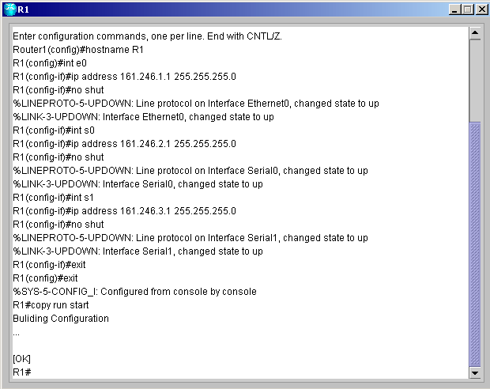
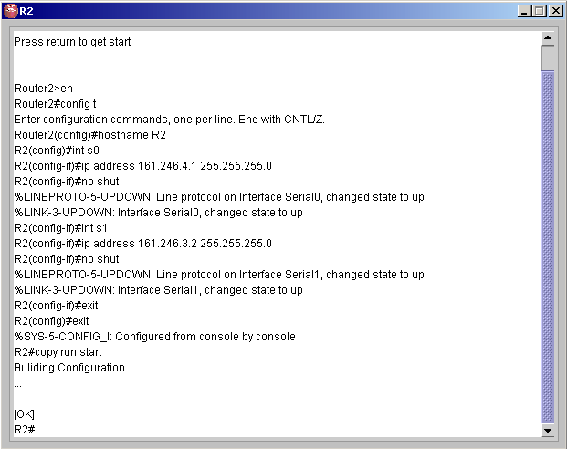
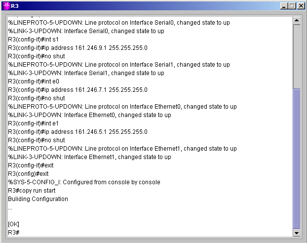
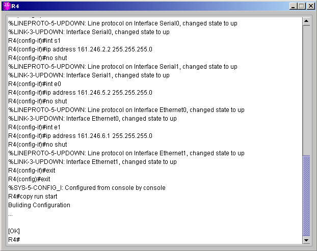
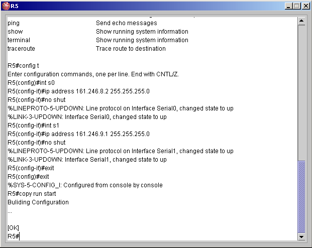
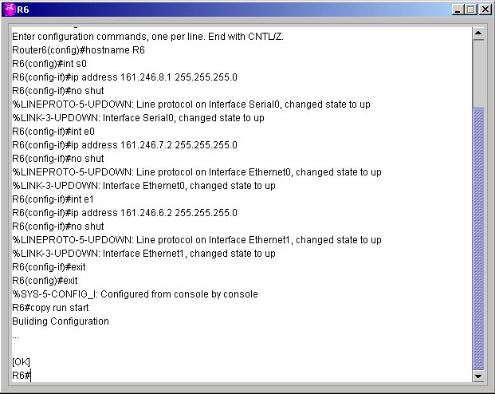
Router#config t
Router(config)#router ospf process-id
โดยทำที่ทุกๆ เราเตอร์เพราะเราต้องการให้ทุกๆเราเตอร์อยู่ในโปรโตคอล OSPF
ในที่นี่ process-id เป็นอะไรก็ได้ไม่มีผลต่อโปรแกรมนี้
เช่น
Router(config)#router ospf 11
R1(config)#ip ospf cost R2 30
R1(config)#ip ospf cost R3 85
R1(config)#ip ospf cost R4 130
R2(config)#ip ospf cost R4 115
R3(config)#ip ospf cost
R4 30
R3(config)#ip ospf cost R5 95
R3(config)#ip ospf cost R6 70
R4(config)#ip ospf cost R6 95
R5(config)#ip ospf cost
R6 95
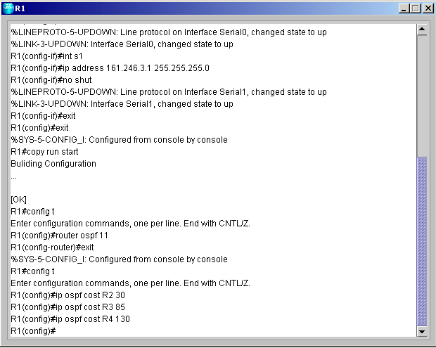
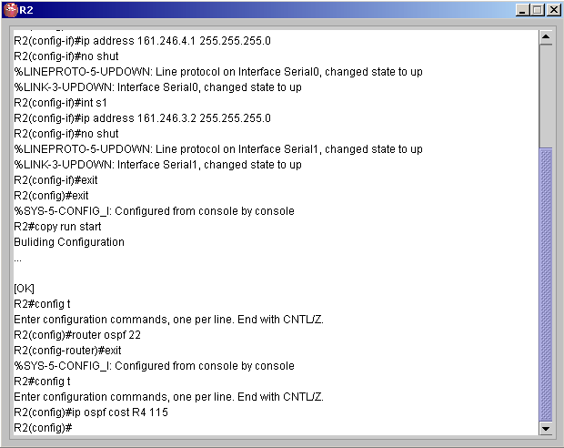
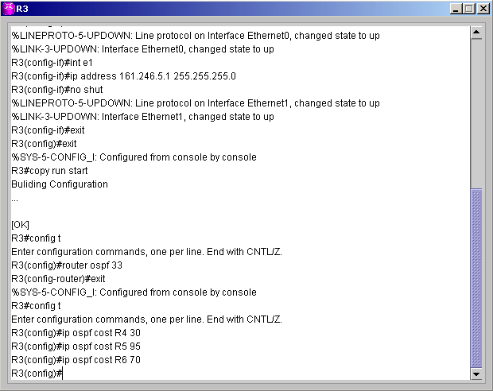
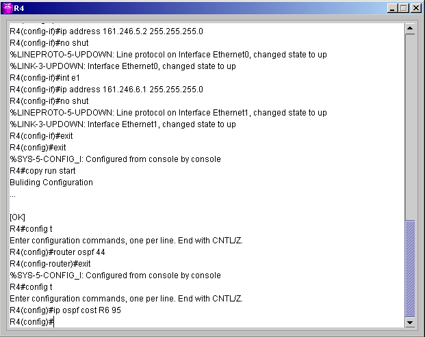
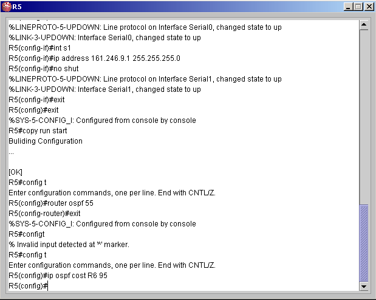
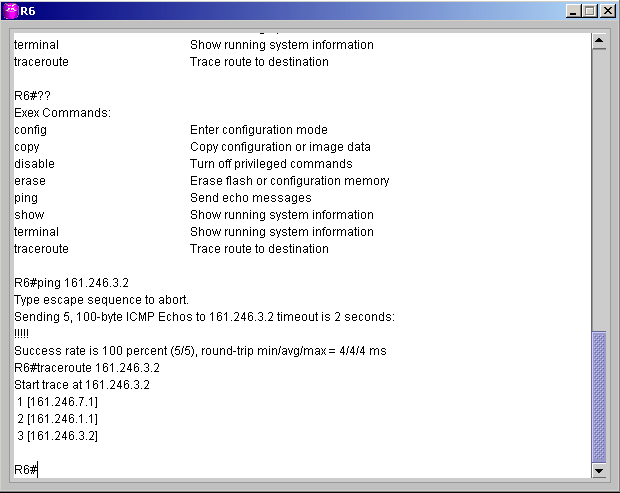